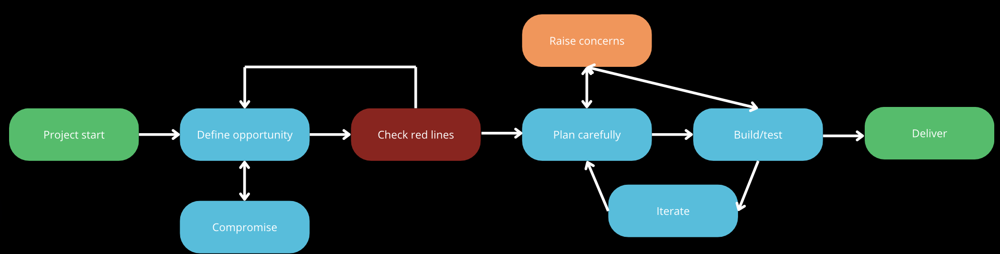

In progress
Propulsion
Analysis
MATLAB
Rocket propulsion analysis
A developing body of work around propulsion concepts, system reasoning, and the analytical foundations needed for higher-level aerospace work.